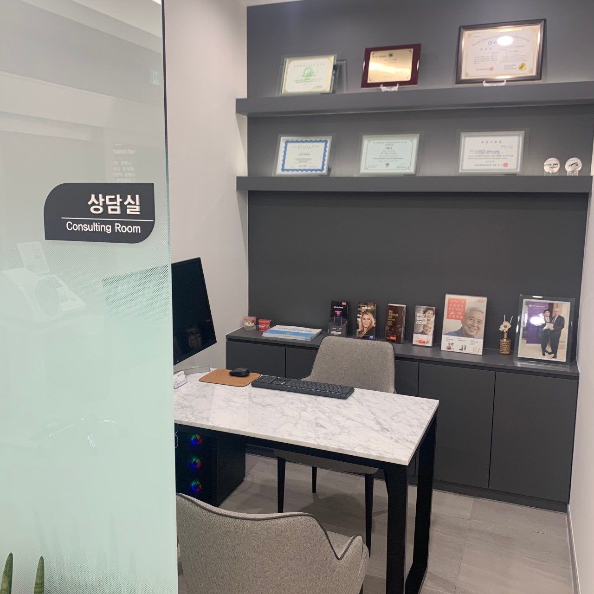
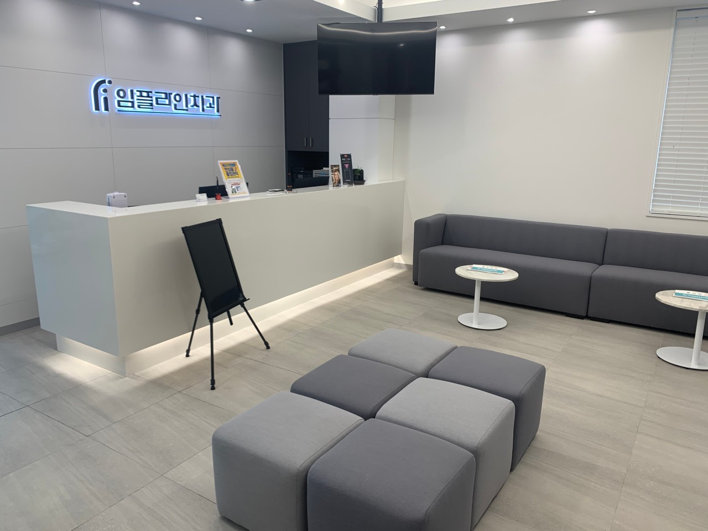

임플라인치과는
자연치아를 최대한 보존합니다.
치아 속 신경이나 혈관 등 연조직을 일컫는 치수가 감염되거나 염증이 생겼을 때 이를 치료하는 방법입니다.
심한 충치나 외상, 치주염 등에 의해 치수가 손상된 경우 영구치를 발치하기 전 마지막으로 시도해 볼 수 있는
보존치료법입니다.


신경치료가 필요한 경우
- · 충치가 심해 치수 신경까지 감염 된 경우
- · 충치 부위가 깊어 충치를 제거 시 신경이 노출될 가능성이 높은 경우
- · 치아 형태 이상으로 신경치료가 필요한 경우
- · 보철치료 시 치아 삭제량이 많은 경우
- · 치아가 심각하게 마모되어 시린 경우
- · 치주질환으로 신경이 손상된 경우
- · 기존에 신경치료를 받은 치아 뿌리에 염증이 재발한 경우
신경치료 과정
치수강 개방 및 발수
염증에 감염된 치수를 제거하기 위해 신경을 최소한으로 개방하여 손상된 조직을 완전히 제거합니다.
근관 측정 및 확대
근관의 길이를 정확히 측정하고 소독 약제가 잘 도달할 수 있도록 근관 내부 공간을 넓히고 매끄럽게 다듬어 줍니다.
근관 세척 및 소독
감염 및 염증 조직으로 비워진 신경 공간을 특수 용액으로 여러 차례 세척하여 소독합니다.
근관 충전
신경 조직이 제거된 빈 공간이 다시 감염되지 않도록 인체에 무해한 특수 재료를 이용해 치밀하게 채워 밀폐합니다.
신경치료 후 주의사항
신경치료 중에 있는 치아는 매우 약한 상태이므로 치료 중인 치아 쪽으로 씹지 않도록 주의해야 합니다.
치료 과정 또는 직후에는 일시적으로 통증이 발생할 수 있으며 많이 아프실 경우 진통제를 복용해 주세요.
마취가 풀리기 전 식사, 양치질 등을 과도하게 하시면 감각이 없어 자극을 모를 수 있으니 마취가 완전히 깬 후 식사해 주세요.
치료 도중 임시로 넣은 약재가 빠지거나 부서지면 내부가 감염될 수 있으니 식사에 큰 어려움이 없더라도 치과에 문의하시기 바랍니다.
신경치료가 완료된 치아는 영양분 공급이 차단되어 수분과 영양분이 부족해 쉽게 부러질 수 있어 반드시 크라운 등으로 보호해주어야 합니다.
치료가 완전히 끝나기 전까지는 염증 회복을 방해하는 음주와 흡연은 2~3주 정도 반드시 삼가주시기 바랍니다.
자주 묻는 질문
보통 3~5회 정도 내원하여 치료를 받으셔야 합니다. 사람마다 신경관의 구조나 염증 정도가 다르기 때문에 여러 번의 치료가 필요할 수 있습니다.
맞습니다. 치수로의 영양공급이 단절되기 때문에 수분이 없어 쉽게 부서질 수 있습니다. 이를 막기 위해 반드시 크라운 등 보철물을 씌워 보호해야 합니다.
네, 신경치료 후 치아를 씌워주지 않으면 약해진 치아가 깨지거나, 세균이 침투하여 다시 아프게 될 수 있으므로 반드시 크라운을 씌워야 합니다.
치료 후 일시적으로 욱신거림이나 통증이 있을 수 있으나 시간이 지나면서 점차 완화됩니다. 하지만 진통제로도 조절되지 않는 심한 통증이 발생한다면 즉시 담당의와 상의하셔야 합니다.